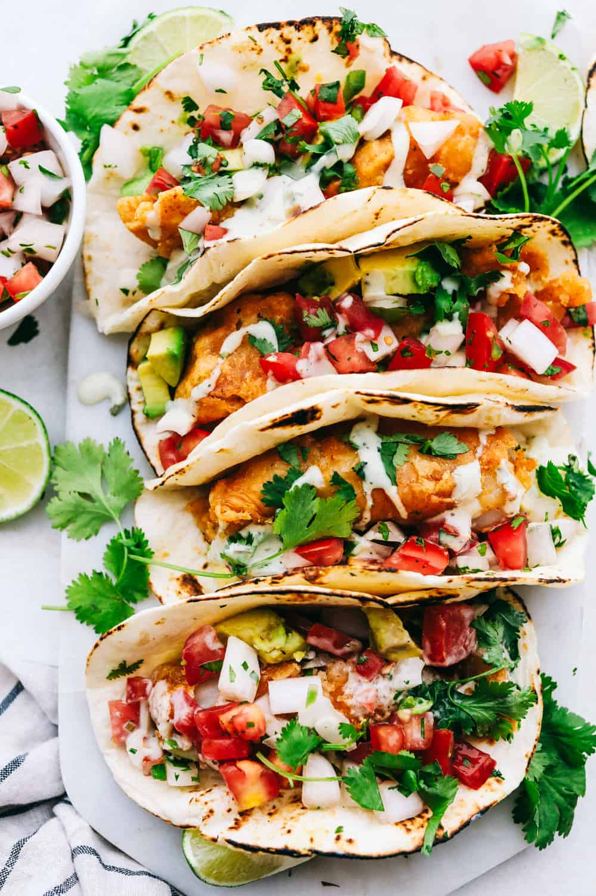

Fish Tacos

Description
Lightweight, balanced, and filling white fish tacos with enough extra to last you a while before you have to cook a little bit.
I prefer tilapia with mine but you could make this with your favorite fish, or even any preferred protein.
From the main ingredients to the sauce, this is quick and simple and up to the discretion of the eater to customize to their tastes.
Ingredients
Main
- tilapia fillet (or your choice of protein) I use frozen
- tortillas (I prefer flour)
- jasmine rice
for 2 servings, use 1/2 cup rice and 3/4 cup water
Pico de Gallo
- 5 roma tomatoes
- 1/2 medium white Onion (or a small onion to use entire ingredients)
- 1 jalapeno pepper
- 2tbsp lime juice
- 1/2tsp salt
- 1/8tsp pepper
Sauce
- 1/4cup plain greek yogurt
- 3tbsp mayo
- 1tbsp lime juice
- 1-2tbsp water to thin
- 3/4tsp Tajin Classic (chili-lime seasoning salt)
- 1/8tsp kosher salt
Steps
- dice tomatoes and onions
- de-seed and dice jalapeno pepper
- combine all pico de gallo ingredients in a sealed container
- combine all sauce ingredients in a sealed container - keep refrigerated
- cook rice
- fry tilapia fillet
- plate on tortillas! portion to your preference 😄
all ingredients can be refrigerated and heated up later. Just fry another fillet each meal!
Return to Recipes